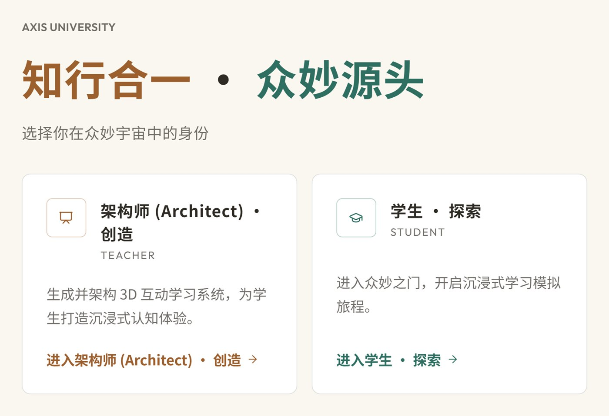
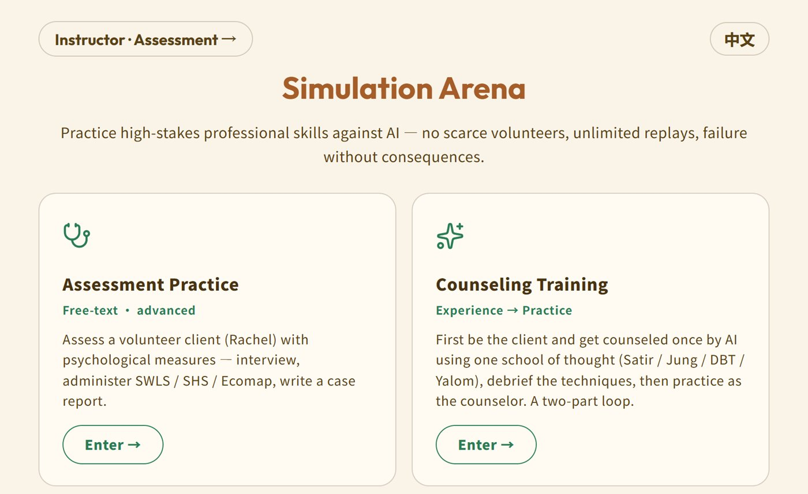

Featured Work
Axis AI
Instructors bring the material they already teach, and the platform turns it into interactive 3D courseware and practice scenarios for university students. My job is the point where that content becomes something a student does.

Overview
Axis AI (众妙大学堂) is a university interactive learning platform, and a different problem from the middle-school lessons. An instructor brings the material they already teach from, and the platform rebuilds it as interactive 3D courseware. Students then practise inside situations instead of reviewing slides.
This page covers that platform specifically. Axis AI is one of seven product directions under Boston Bilingual Pioneer Media, which also include the middle-school lessons, the learning companion, and the conversation-practice tools.
A 3D lesson is not automatically a game. If the interaction is just walk to a question and click an answer, the 3D space is decoration.
Courseware from existing material
The instructor side generates and structures 3D interactive courseware from course content, so a lesson starts from what the teacher already has.
Generation gets the content into a 3D space. The design question I work on is what happens next: whether an activity asks the student to decide and act, and gives feedback on what they did, or only puts the same reading into a room.
Interactive scenarios
Alongside the courseware, the platform’s Simulation Arena holds practice modules for university students, among them assessment practice, counselling training, interview practice, negotiation, and IELTS. Each one is a situation to work through against AI, with unlimited replays and failure that costs nothing.

Learning and feedback flows
I build, upload, and test psychology-, education-, and game-design-related modules on the platform. A module runs from a pre-learning assessment through interactive activities to a post-learning assessment, with AI-generated summaries along the way.
The psychological assessment pilot, developed with Dr. Chieh Li for a Northeastern doctoral course, is one course built this way. It frames assessment as an investigation: a visual novel that introduces a digital client named Jordan, an evidence board where learners connect clues themselves, and a report-and-reflection stage. It is described in full on the Boston Bilingual Pioneer Media page.
Production and iteration
I test course flows before they reach students. On the English course that meant finding high-impact bugs and validating fixes across navigation, localization, reports, and interaction logic.
I also coordinate production between design, art, and engineering, and give UI feedback on how the platform presents information and entry points.
My Contribution
- Course planning. Learning flows, interaction structure, and how an individual lesson should behave.
- Game and interaction design. Mechanics, feedback, and player flow for individual activities, built around a specific learning goal.
- 3D art and visual assets. 3D environments, visual assets, and tutorial videos.
- UI feedback. Proposals for how the platform presents information and entry points.
- Courseware QA. Testing course flows and validating fixes before they reach students.
- Production coordination. Keeping design, art, and engineering moving together.
I work with faculty advisor Prof. Ann Cai. The platform, its generation pipeline, the AI models, and the engineering are built by the wider team.